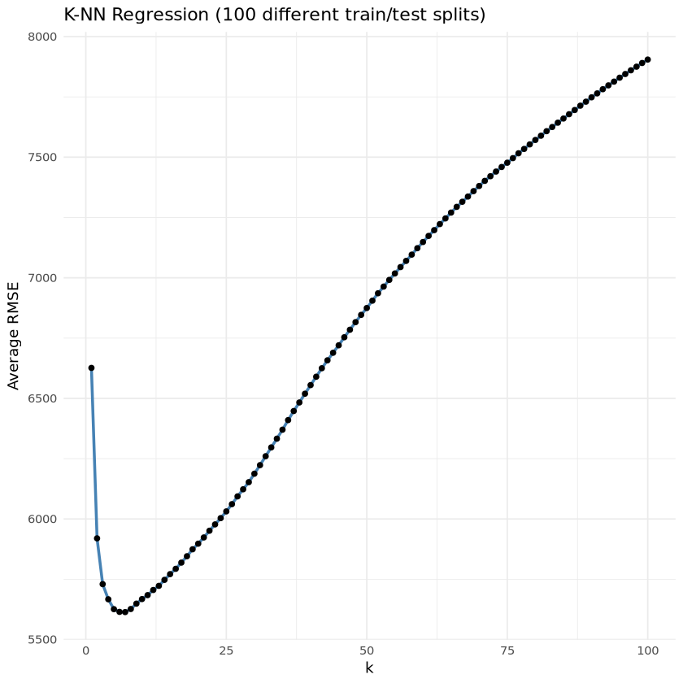
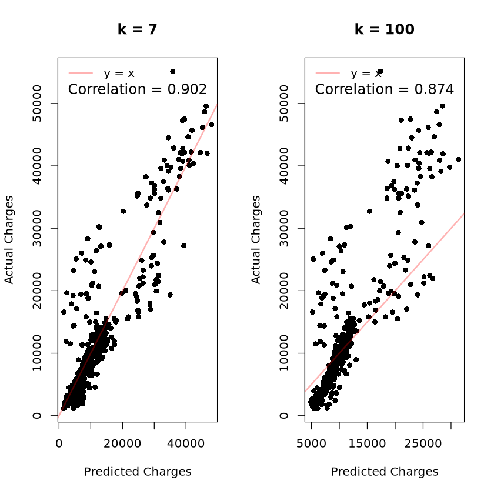

install.packages("FNN")Updating HTML index of packages in '.Library'
Making 'packages.html' ...
done
이상민
May 27, 2025
Updating HTML index of packages in '.Library'
Making 'packages.html' ...
done
age sex bmi children
Min. :18.00 Length:1338 Min. :15.96 Min. :0.000
1st Qu.:27.00 Class :character 1st Qu.:26.30 1st Qu.:0.000
Median :39.00 Mode :character Median :30.40 Median :1.000
Mean :39.21 Mean :30.66 Mean :1.095
3rd Qu.:51.00 3rd Qu.:34.69 3rd Qu.:2.000
Max. :64.00 Max. :53.13 Max. :5.000
smoker region charges
Length:1338 Length:1338 Min. : 1122
Class :character Class :character 1st Qu.: 4740
Mode :character Mode :character Median : 9382
Mean :13270
3rd Qu.:16640
Max. :63770 - 범주형 변수 처리 및 범주형으로 변환
- One-hot Encoding(fullRank=True로 다중공선성 방지)
- 독립변수(X), 종속변수(y) 분리
- 독립변수 표준화(평균0, 표준편차1)
- 반복횟수 및 훈련 데이터 비율 설정
- 다양한 k값(1~100)에 대한 RMSE 저장 행렬 생성
- 100번 반복하여 훈련/테스트 분할 및 RMSE 계산
for (t in 1:T) {
set.seed(t) # 반복마다 시드 고정
train_idx <- sample(1:N, n_train, replace = FALSE)
test_idx <- setdiff(1:N, train_idx)
x_train <- X_scaled[train_idx, ]
x_test <- X_scaled[test_idx, ]
y_train <- y[train_idx]
y_test <- y[test_idx]
for (k in k_range) {
# KNN 회귀 실행
pred <- knn.reg(
train = x_train,
test = x_test,
y = y_train,
k = k
)$pred
# RMSE 계산 후 저장
rmse <- sqrt(mean((y_test - pred)^2))
rmse_matrix[t, k] <- rmse
}
}- k별 평균 RMSE 계산
- RMSE 시각화
ggplot(results, aes(x = k, y = RMSE)) +
geom_line(color = "steelblue", size = 1) +
geom_point(color = "black") +
labs(title = "K-NN Regression (100 different train/test splits)",
x = "k",
y = "Average RMSE") +
theme_minimal()Warning message:
“Using `size` aesthetic for lines was deprecated in ggplot2 3.4.0.
ℹ Please use `linewidth` instead.”
- 최적의 k 값 출력
- 최종 예측 비교
- 최적 k로 예측
- k=100 으로 예측 (비교용)
- 예측값과 실제값의 상관계수 계산
- 시각화
par(mfrow = c(1, 2)) # 1행 2열 그래프 레이아웃 설정
plot(y[test_index] ~ best_pred$pred,
main = paste("k =", best_k),
xlab = "Predicted Charges",
ylab = "Actual Charges",
col = "black", pch = 16)
abline(0, 1, col = rgb(1, 0, 0, alpha = 0.3), lwd = 2)
text(x = mean(range(best_pred$pred)),
y = max(y[test_index]) * 0.95,
labels = paste("Correlation =", round(cor_best, 3)),
col = "black", cex = 1.2, font = 1)
legend("topleft",
legend = "y = x",
col = rgb(1, 0, 0, 0.3),
lty = 1,
lwd = 2,
bty = "n")
plot(y[test_index] ~ k100_pred$pred,
main = "k = 100",
xlab = "Predicted Charges",
ylab = "Actual Charges",
col = "black", pch = 16)
abline(0, 1, col = rgb(1, 0, 0, alpha = 0.3), lwd = 2)
text(x = mean(range(k100_pred$pred)),
y = max(y[test_index]) * 0.95,
labels = paste("Correlation =", round(cor_k100, 3)),
col = "black", cex = 1.2, font = 1)
legend("topleft",
legend = "y = x",
col = rgb(1, 0, 0, 0.3),
lty = 1,
lwd = 2,
bty = "n")
- 레이아웃 초기화